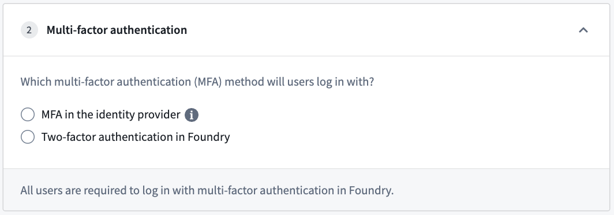
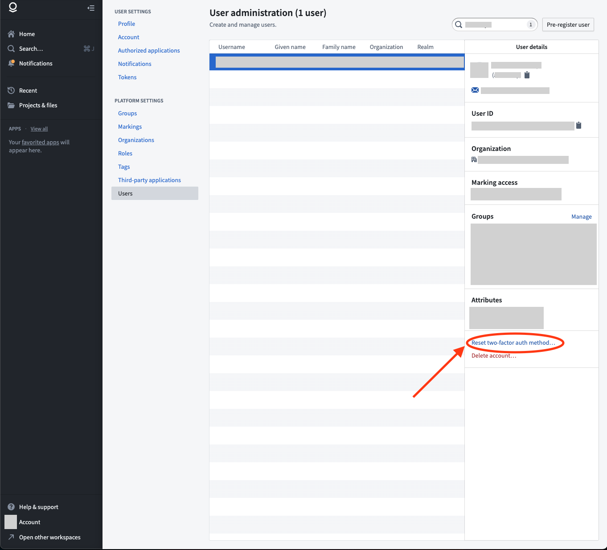

Access to Foundry requires multi-factor authentication, which may either be performed in Foundry with app-based two-factor authentication or directly in your identity provider. Learn more about Palantir's recommendations for identity security.
After configuring a SAML 2.0 integration, click the back arrow at the top of the page and expand the Multi-factor authentication section to select a multi-factor authentication method for your users.

Once you have set up multi-factor authentication, move on to Organization assignment.
If you are unable to generate codes for multi-factor authentication, or if a user in your organization requires a multi-factor authentication reset, first check with your organizationâs IT team to find out how your multi-factor authentication is managed.
If your multi-factor authentication is managed by your organization's IT through your identity provider Your IT team will need to manage any reset requests.
If your multi-factor authentication is managed in Foundry A Foundry Platform Administrator in your organization can reset two-factor authentication/multi-factor authentication with the following steps:
